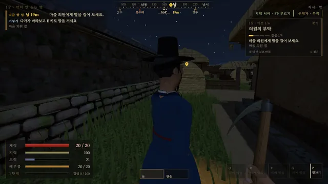

이야기 · 1장
약이 안 듣는 병
남쪽 개울가에서 송장에게 팔뚝을 물린 사람이 실려 왔어요. 의원은 뒷산 북쪽 비탈에서 시호와 칡뿌리, 금은화를 캐 와 달라고 부탁해요.
물린 자리는 아물었는데 앓는 기운이 가시지 않아요. 의원도 탕약이 듣지 않는 병은 처음이라고 해요.
주인 잃은 호패 셋이 나오고, 주막 주모는 읍내에서 들려온 소문을 전해요. 이야기는 거기서 시작돼요.

밤 마을1장 미션
의원의 부탁첫 밤, 금줄주인 잃은 호패떠돌다 죽은 이들주막 소식의원의 서찰
마을 사람들의 부탁
분이의 피접담 밖 이리김매기망루에 홰새 솟대송계 산 돌기서쪽 숯막보부상 신표객귀 물리기주모 외상값혼상계 부조봇둑 메우기밤 순라